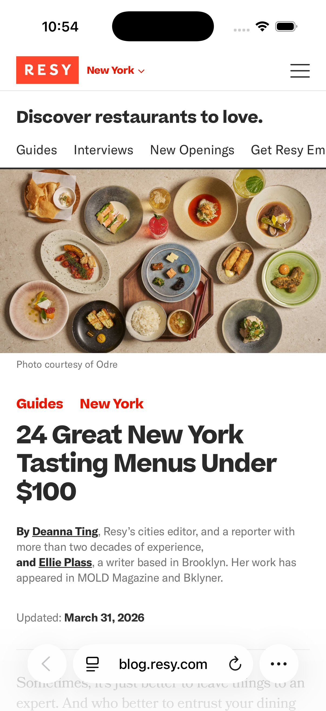

Traditionally, listing apps rely on granular filtering (cuisine, time, rating, availability) and list-based discovery, but user intents are changing rapidly.
First with the Google “omni-box” search box, where users expect to simply type what they want and get relevant results, and now increasingly toward direct, informed, conversational answers. Generative AI is shifting user expectations in real time, creating an opportunity to catch up and differentiate search through the use of LLMs.
- Speed: One-shot answers instead of filters (which few people use). A single, thoughtful response saves time and boosts satisfaction, especially on mobile.
- Context: People want expert (or social) curation. AI responses can mirror Resy’s editorial tone, helping users understand not just what’s available, but why it fits their vibe.
- Flexibility: Unlike filters that box users in, natural language queries allow broader exploration (“chill rooftop for date night”), helping users express intent with nuance.
And mobile users are more likely to ask questions than use dropdowns. Google’s Head of Search, Elizabeth Reid, noted in a recent interview that AI Overviews have led users, especially younger ones, to ask more and longer questions, including multimodal queries combining text and images.
This indicates a significant shift in user behavior toward more natural, conversational interactions with search engines.
A Modest Proposal
Given the internal sensitivities to generative AI and concerns about discarding what has proven effective in favor of a new, flashy technology, we adopted an experimental approach: pair traditional venue card results with dynamic, AI-powered summaries.
Ask the LLM to answer the user’s query, above the usual search results:
- 3-5 editorial-quality suggestions, with source links;
- Contextual reasoning (e.g., neighborhood, availability, price tier, Resy links);
- Follow-up suggestion box, to build on the original query (“Looking for a particular cuisine or neighborhood?”).
This approach aligned with our established workflows and brand positioning by crafting responses around Resy Guides, Collections, and curation, rather than providing generic summaries. This allowed us to explain not only what matched but also why.

Competitive Differentiation
The concept also clarified where Resy could differentiate:
- OpenTable: still relied heavily on traditional filtering and list-based discovery, with no real AI search layer to help diners describe what they wanted in plain language.
- Google Maps: moved faster on generative overlays, but its answers felt generic and noisy, mixing broad suggestions with ads, sponsored placements, and uneven crowd-sourced content.
- Yelp: offered plenty of opinions, but discovery was driven by reviews and popularity rather than real-time availability or booking intent.
That gave Resy a more distinctive lane. It could combine editorial judgment, live inventory, and a clear booking path in one experience, giving users more than a summary and more than a filter stack.
The result could feel specific and trustworthy while still staying close to action.
Strategic Opportunities
That framing also opened up a broader set of strategic opportunities. The AI layer could act as a gateway into Resy’s editorial ecosystem, surfacing Guides and Collections at the moment a diner was trying to decide where to go. It also created a more natural foundation for personalization, whether that meant tailoring suggestions to a cuisine, a neighborhood, a specific restaurant, or eventually a user’s own preferences and history.
Most importantly, it expanded the kinds of questions Resy could answer well. Queries like “romantic but not stuffy,” “birthday-friendly, below $100,” or “where can I walk in near me?” are awkward fits for rigid filters, but they map cleanly to conversational search. That made the concept feel less like a novelty layer and more like a practical way to unlock higher-intent, harder-to-serve use cases.
Pointing Toward The Future Of Search
After some initial internal excitement, we shelved the concept, and I soon left the company. But the direction only became more obvious from there. User behavior kept moving toward longer, more conversational queries, while competitors continued to experiment with AI-assisted discovery. Resy could have occupied a warmer middle ground: not just a dining discovery tool, and not just a booking tool, but a dining concierge that brought discovery, curation, and booking into one place.
Just as importantly, the concept proved the value of unshipped exploration. Somm AI helped define what an editorially grounded, availability-aware AI surface could look like inside Resy before that direction became table stakes across consumer products.